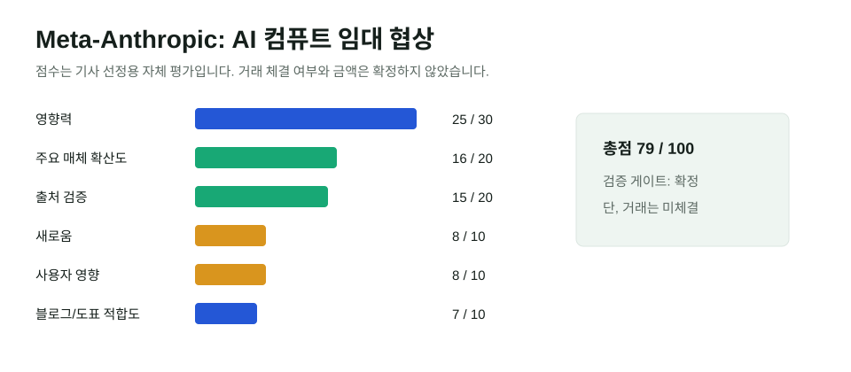

Meta와 Anthropic의 컴퓨트 협상, AI 클라우드 판을 바꾸나
Meta가 Anthropic에 AI 컴퓨팅 용량을 임대하는 방안을 논의 중이라는 보도는 아직 계약 체결 뉴스가 아니다. 하지만 Reuters, FT, CNN, Bloomberg 계열 보도를 종합하면 "Meta가 내부용 AI 인프라를 외부 매출원으로 바꿀 수 있다"는 핵심 사실은 발행 기준을 통과한다.

핵심 요약
AI 경쟁은 모델보다 컴퓨트 확보전으로 이동 중이다
NYT가 먼저 보도한 협상은 최대 100억 달러 규모로 언급됐지만, CNN은 구체 금액을 추정치로 봤고 양사는 논평을 거부했다. 따라서 이 글은 "100억 달러 계약 체결"이 아니라 "Meta와 Anthropic이 컴퓨트 임대를 논의하고 있다"는 범위로 다룬다.
선정 이유
이 사안은 AI 전문 매체만의 소문이 아니다. Reuters, FT, CNN, Barron's, Bloomberg 계열 매체가 다뤘고, Meta가 AI 클라우드 사업을 검토한다는 Zuckerberg 발언 및 AWS 출신 임원 영입 보도와도 이어진다. Anthropic은 이미 외부 컴퓨트 계약을 통해 모델 사용량을 늘려 왔기 때문에, 이번 협상은 프런티어 AI 기업의 병목이 "모델 아이디어"보다 "전력·GPU·데이터센터 접근권"임을 보여준다.
| 항목 | 점수 | 판단 |
|---|---|---|
| 영향력 | 25/30 | Meta의 사업모델, Anthropic의 공급망, AI 클라우드 경쟁에 영향 |
| 일반 주요 매체 확산도 | 16/20 | Reuters, FT, CNN, Barron's 등에서 반복 보도 |
| 신뢰도/출처 검증 | 15/20 | 협상 존재는 교차 확인, 금액과 조건은 미확정 |
| 새로움/중복 회피 | 8/10 | 기존 SpaceX·Anthropic 컴퓨트 글과 다른 Meta 클라우드 전환 이슈 |
| 사용자 영향 | 8/10 | AI 서비스 가격과 이용 제한, 기업 모델 조달 전략과 연결 |
| 블로그·시각화 적합도 | 7/10 | 협상 구조와 검증표 중심 설명 가능 |
| 총점 | 79/100 | 발행 |
| 검증 항목 | 결과 | 근거 |
|---|---|---|
| 원문 확인 | 부분 확인 | 계약서·공식 발표는 없음. 양사는 논평 거부 |
| 독립 확인 | 확정 | Reuters가 NYT 보도를 전했고, CNN은 별도 소식통으로 협상 사실을 확인 |
| 전문매체 확인 | 확정 | Barron's와 IBD가 주가·클라우드 사업 관점에서 해석 |
| 반대 확인 | 확정 | CNN은 구체 금액을 투기적이라고 표현. 계약 체결로 쓰지 않음 |
| 날짜 확인 | 확정 | 주요 보도 2026년 7월 17일, Bloomberg의 Meta 클라우드 발언 보도 7월 9일 |
| 수치 확인 | 부분 확인 | 최대 100억 달러는 NYT 인용 보도 기준. 확정 금액으로 단정하지 않음 |
| 이해관계 | 표시 | 단독 보도 출발, 회사 공식 확인 없음 |
본문 해설
Meta는 오랫동안 자사 서비스와 모델 학습을 위해 막대한 데이터센터를 지어 왔다. 그 인프라를 외부 기업에 팔거나 빌려주는 순간, Meta는 광고회사이자 AI 모델 회사일 뿐 아니라 AI 클라우드 공급자가 된다. Anthropic 입장에서는 Amazon, Google, SpaceX에 이어 또 다른 컴퓨트 공급원을 확보하는 선택지가 생긴다.
핵심은 "왜 Anthropic이 경쟁사의 컴퓨트를 빌리려 하느냐"다. 프런티어 모델 사용량이 늘면 고객 수요를 감당하기 위한 추론 용량이 곧 매출 한도가 된다. 모델 품질이 좋아도 GPU와 전력이 부족하면 사용 제한을 낮추거나 가격을 올릴 수밖에 없다. 컴퓨트 계약은 단순한 비용 항목이 아니라 고객 성장률을 결정하는 병목 해소 장치다.
반대 해석/주의할 점
이 모듈을 넣은 이유는 보도 출발점이 단독 보도이고, 양사가 공식 확인하지 않았기 때문이다. 실제 계약은 무산될 수 있고, 조건도 바뀔 수 있다. 특히 최대 100억 달러라는 숫자는 확정 공시가 아니라 인용 보도다. 그래서 이 글은 금액보다 "Meta의 컴퓨트 외부 판매 가능성"과 "Anthropic의 공급처 다변화"에 초점을 맞춘다.
한국 독자 영향
국내 AI 기업과 클라우드 사업자에게 이 뉴스는 두 가지 질문을 던진다. 첫째, 모델 경쟁력이 곧 컴퓨트 조달 능력과 연결되는가. 둘째, 대기업이 내부 AI 인프라를 외부 매출원으로 전환할 때 기존 클라우드와 네오클라우드의 가격 구조가 어떻게 바뀌는가. 한국 기업은 API 가격뿐 아니라 사용량 제한, 데이터 위치, 장기 공급 안정성을 함께 봐야 한다.
이미지/표 참고 링크
사진은 사용하지 않았다. 위 SVG는 기사 점수와 검증 판단을 바탕으로 직접 제작했다. 금액이 미확정이므로 별도 규모 그래프는 만들지 않았다.
저작권 주의사항
NYT, Reuters, FT, CNN, Bloomberg 계열 기사 본문과 사진은 재게시하지 않았다. 유료 기사와 통신사 사진은 링크 참고만 했다.
발행 전 확인 포인트
- Meta 또는 Anthropic 공식 발표, SEC 공시, 고객 계약 공개가 나오면 금액 표현을 갱신한다.
- 계약이 체결되지 않은 협상 단계임을 제목과 본문에서 유지한다.
- AI 클라우드 사업 진출은 Meta의 실제 제품 출시 여부와 분리해 본다.
출처 링크
- Reuters mirror: Meta e Anthropic negociam possível acordo
- Financial Times: Meta and Anthropic in talks
- CNN: Meta in talks to rent AI infrastructure to Anthropic
- Bloomberg Law: Zuckerberg says exploring AI cloud business makes sense
- WSJ: Meta plans AWS executive hire as it weighs cloud push
- Barron's: Anthropic may rent AI hardware from Meta